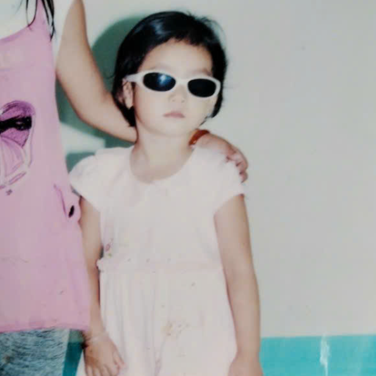
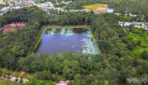

Chào bạn, tôi là Thạch Phạm Mỹ Thanh
Hiện đang sống ở Trà Vinh, tôi là một người cực kì thích đi du lịch và mong sau này tôi sẽ có 1 chuyến du lịch xuyên Việt Nam và đi nhiều nước trên thế giới.
Sở thích của tôi
- Đi du lịch
- Dạo đường phố ngắm cảnh
- Ngắm sao
Đặc sản của nơi tôi sống
- Ao Bà Omm
Ao Bà Om, nằm ở tỉnh Trà Vinh, là một thắng cảnh nổi bật của miền Tây Nam Bộ với cảnh quan độc đáo.Ao có hình chữ nhật, nước trong xanh quanh năm, được bao bọc bởi hàng cây sao, cây dầu cổ thụ. Điểm đặc biệt là bộ rễ cây nổi lên mặt đất, tạo hình dáng độc lạ, vừa vững chãi vừa mang nét đẹp hoang sơ, kỳ bí.Với Giá trị văn hóa - lịch sử, ao Bà Om hay còn gọi là ao Vuông gắn liền với truyền thuyết dân gian của người Khmer, biểu trưng cho sự thông minh và khéo léo của người phụ nữ Khmer. Gần ao còn có các di tích văn hóa như chùa Âng và Bảo tàng Văn hóa Dân tộc Khmer. Ao Bà Om là nơi diễn ra lễ hội Ok Om Bok (lễ cúng trăng) – một sự kiện văn hóa lớn của người Khmer, thu hút đông đảo du khách đến tham dự.Với sự hòa quyện giữa thiên nhiên, lịch sử và văn hóa, ao Bà Om là biểu tượng tiêu biểu của Trà Vinh, thu hút nhiều du khách trong và ngoài nước.

Để biết thêm về Ao Bà Om hãy nhấn vào đây
Hy vọng bạn sẽ có thêm thông tin về tôi và nơi tôi sống. Nếu bạn muốn kết nối hoặc có câu hỏi nào, đừng ngần ngại liên hệ qua thachphammythanh2k7@gmail.com.